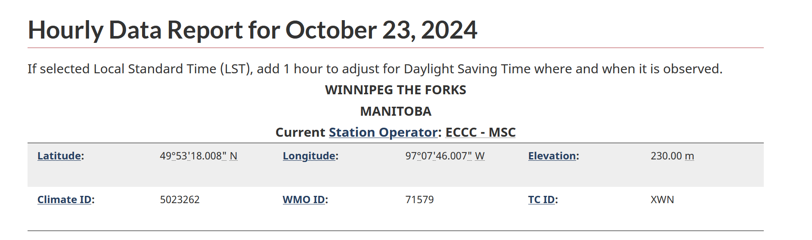

5.2. Full Documentation: Create Database from Raw Data and Inspect Contents
This section complements the quick-start set up in section 4.2.
On this page: - Best practices - Useful information on creating your database - Creating Database From Multiple Input Files and Updates for Continuous Operational Sites - Create database using data from Canadian meteorological stations - Visualize and inspect your newly created database
Best practices
The best-practice approach for each project is to have one “main” script for data processing (e.g., DataCleaning_Main.m). This script should contain all the steps that are needed to go from raw data to the final gap-filled Ameriflux “clean” data set: 1. Obtaining/downloading the raw data (not covered here, we assume you have your own systems for obtaining datalogger output from your sites); 2. Creating the database in the appropriate format (this section); 3. Applying the data-cleaning stages (section 6).
This section covers step 2, and you can add data-cleaning code later in section 6. Each flux site is unique with its own sensors, data loggers, and data archiving formats (such as EddyPro output files, TOA5 Campbell Scientific files, Ameriflux CSV files, to name a few). The purpose of step 2 is to convert from such a site-specific dataset to a generic dataset ready to be processed using the standardised libraries (i.e., Biomet.net). These “generic” binary files can be read by most computer languages, by design, meaning they are suitable for the Biomet library which contains code written in Matlab, R, and Python.
If you need help getting started with your “main” computer program, a sample Matlab script is provided in the quick-start guide (section 5.1 XXX check). With that DataCleaning_Main.m script the entire data processing is documented and it can be easily replicated. Insert as many informative comments as you can - it will help if the process needs to be reviewed later on. When working with your own data, we still recommend following the steps in the tutorial as they also outline where to put your raw data files, and other important tasks.
Useful information on creating your database
Determine the data format/source of raw data in your
Sitesdirectory.Use standard existing function(s) from the Biomet.net library, which you have already cloned/downloaded, to convert your raw data and create the database in
Databasedirectory. Examples of functions that can read your data and be used in your “main” script are as follows:db_struct2database(create database from Matlab structure; flux or met data);fr_read_EddyPro_file(create database from EddyPro output; flux data);fr_read_TOA5_file(create database from TOA5 Campbell Scientific ASCII files);fr_read_generic_data_file(create database from most file formats).
[XXX Zoran: not sure what else to add here, how do you feel about sharing test_fr_read_generic_data_file.m with those examples?]
The relevant function, when run in matlab, will create subdirectories named by data year (
yearIn), then bySITEID(i.e., SITEIDs are grouped by year), as follows:Figure 5.4. Directory tree showing structure of
Databasefolder for multiple years and multiple sites under one project.The SITEID subdirectories will be populated with data (e.g.,
FluxandMetif these data types exist) for the appropriate year, stored as binary files ready for cleaning. The green highlighting in figure 5.4 shows an example with three years of data from two different sites.The
clean_tvfile, which will be located in each Raw/Clean folder, is a standardized time vector of 30-minute frequency. This formats the timestamp of each record in Local Standard Time (LST; as required by AmeriFlux). [XXX Zoran, it is still not clear to me exactly how this file is created…]
We advise you to generalize your scripts as far as possible, based on the sites and data that you have, and remember to document your code thoroughly.
Creating Database From Multiple Input Files and Updates for Continuous Operational Sites
In real applications, it is likely that users will have multiple input files from Flux and Met stations (daily, monthly, or annual files). It is also very often the case with active sites that new files are continuously being downloaded from the site and being added to the data folder.
To facilitate data processing in those cases we use specialized functions that can deal with multiple files and keep track of which files have changes since the last database update and updating only those. That way raw data folders can contain thousands of files without affecting the speed of the database updates.
Updating Flux data
Here is an example of how to update database from any files in the Sites/siteID/Flux folder that match a file pattern (in this case eddypro_TUT_*.csv).
%% Processing multiple EddyPro files from the same folder
projectPath = 'E:\Pipeline_Projects\TUT Project';
structProject = set_TAB_project(projectPath);
siteID = 'TUT';
FluxDatabase_Pth = fullfile(structProject.databasePath, 'yyyy', siteID,'Flux');
progressListPth = fullfile(structProject.sitesPath,siteID,'Flux','EddyPro_progressList.mat');
filePattern = fullfile(structProject.sitesPath,siteID,'Flux','eddypro_TUT_*.csv');
optionsFileRead.flagFileType = 'fulloutput';
missingPointValue = NaN;
timeUnit = '30MIN';
[nFiles,nHHours]=fr_EddyPro_database(filePattern,progressListPth,FluxDatabase_Pth,[],timeUnit,missingPointValue,optionsFileRead);
fprintf(' %s - Flux Number of files processed = %d, Number of HHours = %d\n',siteID,nFiles,nHHours);
Updating Met data
If we then wanted to process met data from Sites/siteID/Met folder (using the same projectPath, structProject and siteID) with the file-name pattern matching: TUT_MET.* we could run the following script:
%% Processing multiple TOA5 files from the same folder
MetDatabase_Pth = fullfile(structProject.databasePath, 'yyyy', siteID,'Met');
progressListPth = fullfile(structProject.sitesPath,siteID,'Met','Met_progressList.mat');
filePattern = fullfile(structProject.sitesPath,siteID,'Met','TUT_MET.*');
missingPointValue = NaN;
timeUnit = '30MIN';
[nFiles,nHHours]=fr_TOA5_database(filePattern,progressListPth,MetDatabase_Pth,[],timeUnit,missingPointValue);
fprintf(' %s - Met Number of files processed = %d, Number of HHours = %d\n',siteID,nFiles,nHHours);
If we run the same sequence twice (fr_TOA5_Database or fr_EddyPro_Databse as shown above), the second time the number of files processed would be zero assuming that there were no new files added to the Sites folder between the two runs. If on the other hand, one of the files changed, the function would process it. That is how real-time data gets processed in this data pipeline.
Other examples of Biomet.net functions that update data continuously, and can be written into a script as previously shown, are as follows: 1. fr_HOBO_database (continuously create database from HOBO met data); 2. fr_SmartFlux_database (continuously create database from SmartFlux output; flux data); 3. fr_SoilFluxPro_database (continuously create database from SoilFluxPro output data).
Create database using data from Canadian meteorological stations
Data from Canadian meteorological stations [operational climate stations run by Environment and Climate Change Canada (ECCC)] can be used for gap-filling met data for Canadian flux sites that are in close proximity. If you have gaps in your met data, you can search for nearby climate stations as follows:
To find the closest Environment ECCC stations to your flux site, first go to this website: https://climate.weather.gc.ca/historical_data/search_historic_data_e.html
Click on the “Search by Proximity” tab (figure XXX), select “location coordinates in Decimal Degrees” and type in the coordinates of your flux site:
Figure XXX. “Search by Proximity” tab on ECCC Historical Data website.
We advise selecting a station no more than 25 km away but that is also up to the user’s judgement and their responsibility to justify.
It also helps to select a proper range of dates using either “with data available between” or “with data on” option.
From the list of stations pick one that’s has “Hourly” data for the dates you need, and is closest to your location (see example in figure XXX):
Figure XXX. Search results for selecting the station for gap-filling.
In this example, the closes would be “WINNIPEG THE FORKS”; click on “Go”, and make a note of the “Climate ID” number provided (figure XXX; in this case, the climate ID is 5023262).

Figure XXX. Example of Hourly Data Report for Winnipeg The Forks, showing the Climate ID number.
Next, you need the Station ID (which is different to the Climate ID). Go to this website: https://collaboration.cmc.ec.gc.ca/cmc/climate/Get_More_Data_Plus_de_donnees/; open the
Station Inventory EN.csvfile and search on the Climate ID number that you saved. The number in the column to the right of this is the Station ID, which in the Winnipeg example is 28051. This Station ID will be used for the data downloads.Create a script using the snippet below, and enter your Station ID and other relevant information (years and months). You can enter multiple station IDs at once.
structProject = set_TAB_project(projectPath) stationIDs = [28051]; yearsIn = 2022:2023; monthsIn = 1:12; for cntStations = 1:length(stationIDs) sID = stationIDs(cntStations); pathECCC = fullfile('yyyy','ECCC',num2str(sID)); try run_ECCC_climate_station_update(yearsIn,monthsIn,sID,structProject.databasePath) catch fprintf('Error processing station: %d (year: %d, month: %d)\n',sID,yearsIn,monthsIn(end)); end endRunning this script will create the database for the given station ID, for two years (2022 and 2023) in the current project folder. The new database for the station 28051 is located here:
<projectPath>/Database/2022/ECCC/28051/30min/(and similarly for 2023).Alternatively, if a user wants to create the ECCC database just for the current year, or to keep the climate data base up to date by downloading all the months between Jan and the current month, they can use this function call:
run_ECCC_climate_station_update([],1:month(datetime),28051,db_pth_root).Or, for example, to update only the last two months of the current year:
run_ECCC_climate_station_update([],month(datetime)-1:month(datetime),28051,db_pth_root).
Visualize and inspect your newly created database
Once your database is created, we strongly advise you to review its contents contents using Biomet.net functions. Some of these are listed in the tutorial under section 5.1, and section 8 provides extensive details of visualization tools for insepcting and analysing raw and cleaned data.
When you have confirmed that all the traces you expect to see are present in your newly created Database, you are ready to start cleaning the data. First, you need to obtain the set of sample, configuration, and standardization files, describe in section.